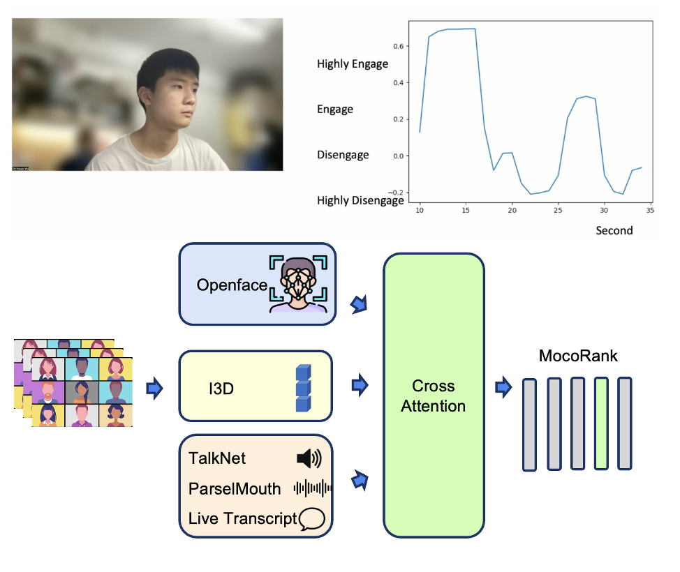
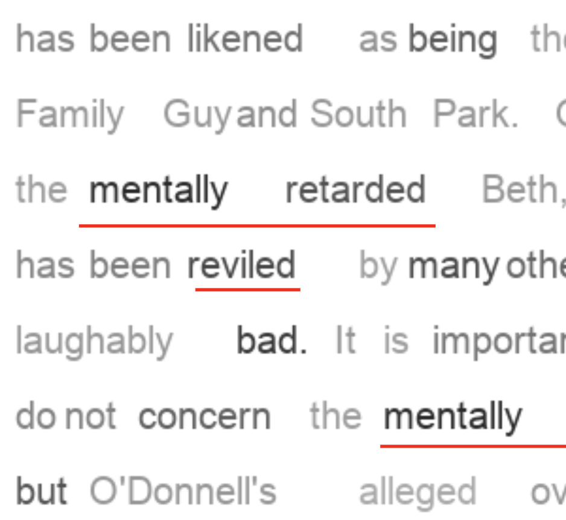
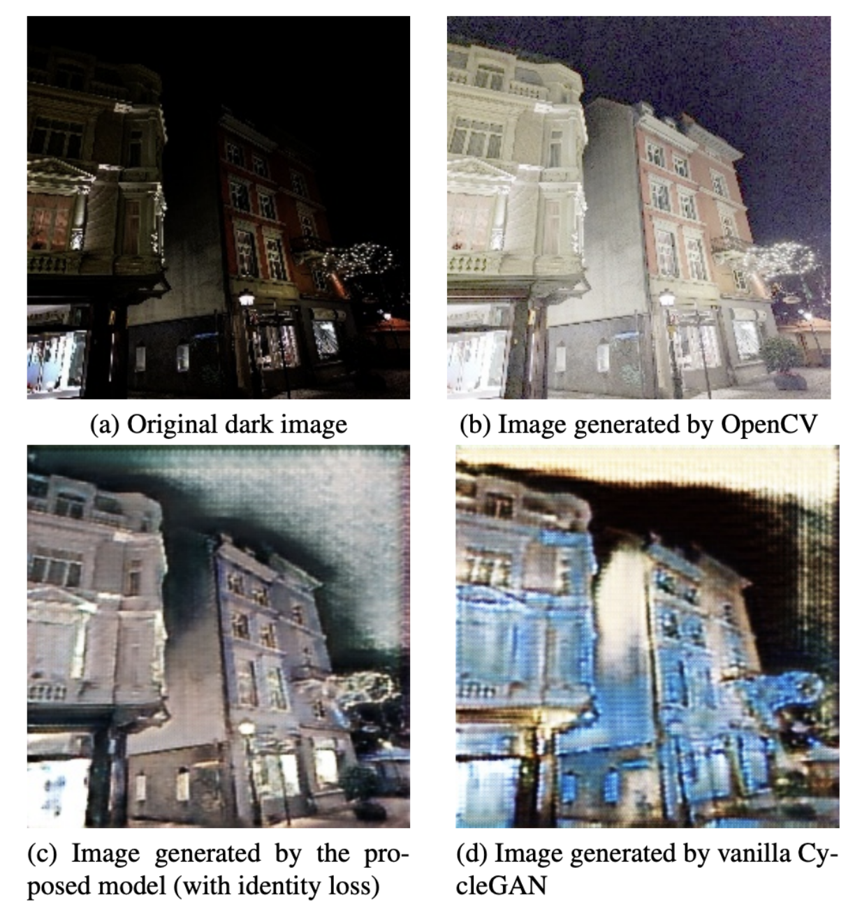
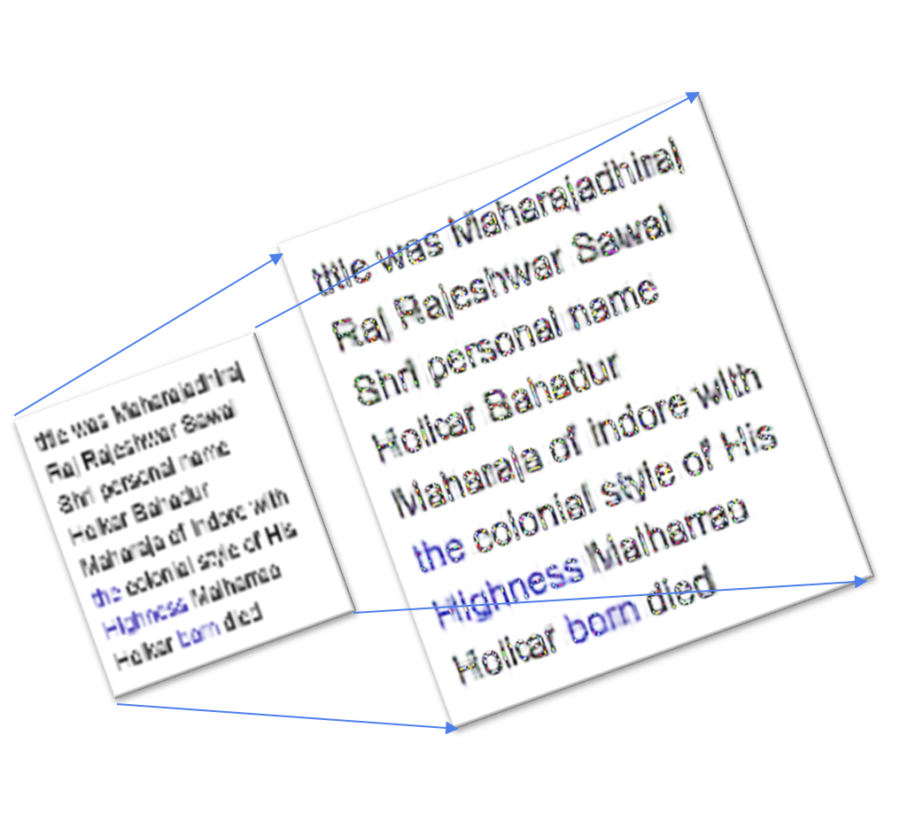

|
Wu Chi Hsuan (Jason) I am currently a research assistant at the Academia Sinica Multi-Media Technologies Lab supervised by Prof. Lin, Jen Chun. I graduated from Hong Kong University of Science and Technology in 2023. During university, I worked on my Final Year Thesis supervised by Prof. Kwang-Ting Cheng. I also worked as a Research Assistant in the Information and Network Dynamics Lab at EPFL supervised by Prof. Matthias Grossglauser during exchange. |

|
Research InterestI am interested in Human Poses and Behavioral Analysis using interaction between different modalities. Human behavior can be estimated from images or videos using poses and deep features, while other modalities can also be informative. For instance, can we improve the prediction of a person’s behavior using the speech and expressions of surrounding people? Can we generate text instructions to correct incorrectly performed movements, such as dancing? Can behavior classification and generation be personalized? These research questions allow behavior analysis insight to be transferred into understandable texts. They also connect prior behavioral studies with applications. |
|  |
CMOSE: Comprehensive Multi-Modality Online Student Engagement Dataset with High-Quality Labels
Wu Chi hsuan, Liu Shih Yang, Huang Xijie, Prof. Tim Kwang-Ting Cheng Submitted to AAAI AI for Education Workshop, 2024 We designed a multi-modal model and a contrastive ranking loss to detect student engagement in online classes. Collaborated with LifeHikes. |
|  |
It's All Relative: Interpretable Models for Scoring Bias in Documents
Aswin Suresh, Wu Chi hsuan, Prof. Matthias Grossglauser Submitted to The European Chapter of the ACL., 2024 We designed a interpretable model structure to detect bias articles and identify subjectivity level of each term based on the context. |
Other Projects |
|  |
Day-Night-Transfomation-for-improving-feature-matching
Computer Vision Project [Github] We transformed illumination of day-night image pairs using CycleGAN to improve feature matching. |
|  |
Super-Resolution on Computer Texts
Undergraduate Research Opportunity Program, Supervised by Prof. Qifeng Chen [Github] We designed two-stream model to simultaneuously improve text boundary clarity and colors on text images. |
Miscellanea |
Blog Posts |
Series of Life Recording: Hong Kong Universiy of Science and Technology |
|
Feel free to use this website's source code. Do not scrape the HTML from this page itself, as it includes analytics tags that you do not want on your own website — use the github code instead. Also, consider using Leonid Keselman's Jekyll fork of this page. |